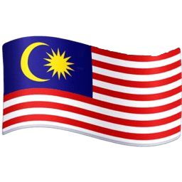

Merdeka 118
Kraj:
Merdeka 118 to imponujący wieżowiec zlokalizowany w Kuala Lumpur, stolicy Malezji. Z wysokością wynoszącą 678,9 metra, jest drugim najwyższym budynkiem na świecie, zaraz po Burdż Chalifa. Jego nazwa – „Merdeka” – oznacza „niepodległość” w języku malajskim i nawiązuje do pobliskiego stadionu Stadium Merdeka, miejsca, w którym ogłoszono niepodległość Malezji w 1957 roku. Budynek stanowi hołd dla historii kraju i jednocześnie symbol jego nowoczesności i rozwoju.
Wieża składa się z 118 kondygnacji nad ziemią i kilku podziemnych. Jej unikalna, wielopłaszczyznowa fasada inspirowana jest sztuką islamską i kulturą malezyjską, co nadaje budowli charakterystyczny, dynamiczny wygląd. Projekt architektoniczny opracowała renomowana firma Fender Katsalidis, znana z realizacji innowacyjnych konstrukcji na całym świecie.
Merdeka 118 to nie tylko rekordowa wysokość, ale także nowoczesne centrum wielofunkcyjne. W budynku znajdują się luksusowe apartamenty, przestrzenie biurowe klasy premium, centrum handlowe, hotel Park Hyatt oraz najwyższy taras widokowy w Azji Południowo-Wschodniej, oferujący spektakularną panoramę Kuala Lumpur.
Wieżowiec został zaprojektowany z myślą o zrównoważonym rozwoju – wyposażony jest w nowoczesne systemy energooszczędne i certyfikaty ekologiczne, co czyni go jednym z najbardziej zaawansowanych technologicznie budynków w regionie.
Merdeka 118 to nie tylko osiągnięcie inżynierii, ale także silny symbol tożsamości narodowej i aspiracji Malezji do odgrywania ważnej roli na arenie międzynarodowej. To nowa ikona Kuala Lumpur, która łączy przeszłość, teraźniejszość i przyszłość w jednej, spektakularnej formie.
Galeria zdjęć kliknij aby powiększyć zdjęcie

Przypisy:
- Wikipedia.com - https://pl.wikipedia.org/wiki/Biskupiec
- Wikipedia.com - Autorstwa JukoFF - Praca własna, CC BY-SA 4.0, Link